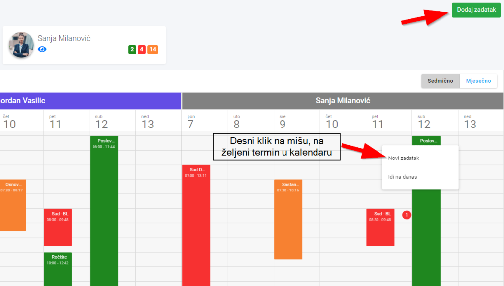
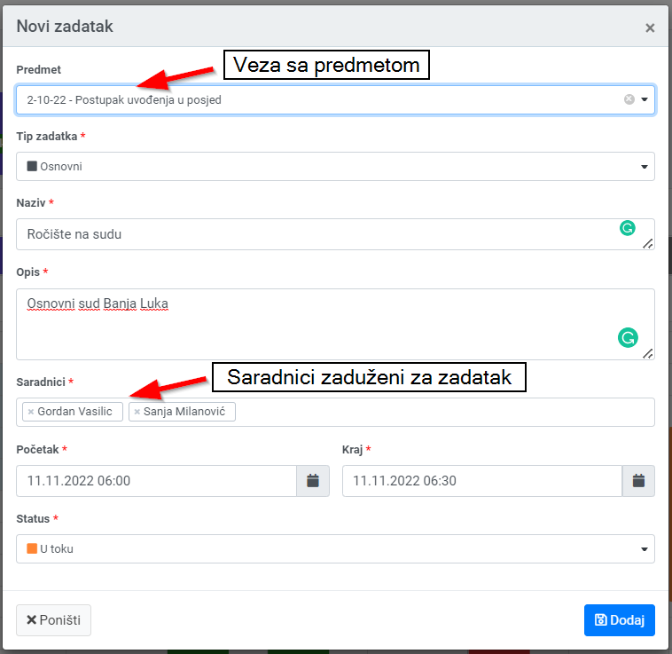
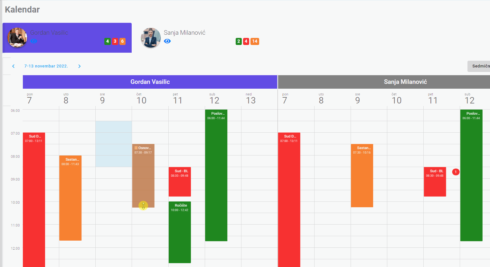
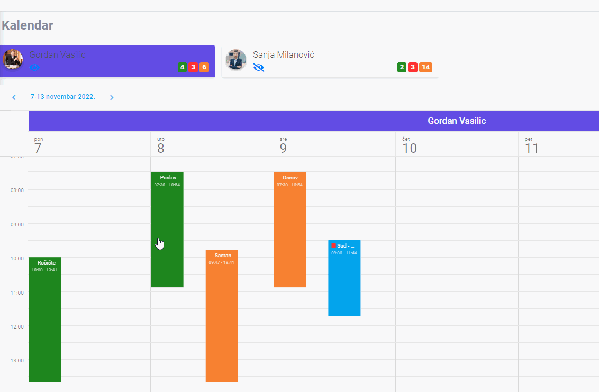

Legalistik Kalendar vam daje grafički prikaz ko šta radi i kad to treba da uradi. Planirajte unaprijed, dodjeljujte zadatke saradnicima i sarađujte sa njima. Ovako ćete biti sigurni da niste ništa zaboravili.
Klikom na link Kalendar u meniju na lijevoj strani otvara nam se sedmični pregled kalendara. Na desnoj gornjoj strani možete mijenjati sa sedmičnog na mjesečni pregled. Pri vrhu kalendara na lijevoj strani možete brzo prelaziti izmedju datuma.
Takođe, ako imate privilegije, možete pregledati kalendare vaših saradnika, dodati im brzo zadatak i provjeriti njihove obaveze.

Desni klik miša na bilo koje vrijeme unutar kalendara daje nam opciju unosa novog zadatka. Novi zadatak takođe možemo dodati i klikom na dugme “Dodaj zadatak” u gornjem desnom dijelu.

Povežite zadatak sa predmetom, ako je potrebno, izaberite vrstu (vrste zadataka naravno možete mijenjati u Podešavanjima) , popunite ostala polja, kao što su naziv zadatka, opis, izaberite saradnike ako i oni učestvuju i nakon snimanja zadatak se pojavljuje u Kalendaru.

Ako trebate pomjeriti ili promjenite vrijeme zadatka, možete jednostavno da raširite ili skupite zadatak, prevučete ga mišem na drugi termin itd.

Klik na zadatak i mozete vidjeti više podataka vezanih za zadatak, kad je, ko od saradnika je dodan. Još jedan klik na zadatak vam otvara kompletan zadatak gdje možete unijeti izmjene.

Desni klik na zadatak vam takodje nudi opciju izmjene zadatka, njegovog brisanja ali možete promjeniti i status zadatka, recimo da je završen.